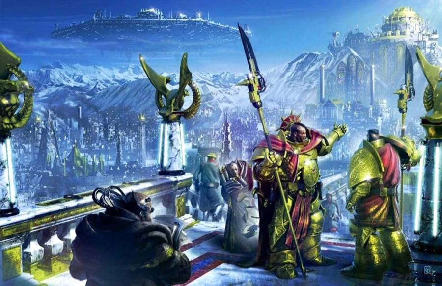

Imperial Palace
| Imperial Palace | |
|---|---|
 Plan of the Palace as kept by the Adeptus Terra | |
| Location | Himalazian range, Terra |
| Type | Fortress-city, seat of government |
| Founded | Late M30, extended through the Great Crusade |
| Inner sanctum | Sanctum Imperialis, housing the Golden Throne |
| Principal gates | Eternity Gate, Lion's Gate, Ascensor's Gate |
| Garrison | Adeptus Custodes, Sisters of Silence, Imperial Fists |
| Occupant | The Emperor of Mankind |
| Notable events | |
| Siege of Terra (013–014.M31); Great Scouring; arrival of Roboute Guilliman (M42) | |
The Imperial Palace is the fortress-city on Terra from which the Emperor of Mankind ruled the Great Crusade and in which he has sat since the Horus Heresy. It covers much of the Himalazian mountain range and its foothills, and its walls, towers, tunnels and bunkers house the machinery of the Imperium of Mankind. At its heart is the Sanctum Imperialis, the inner palace that holds the Throne Room and the Golden Throne. Beneath it lies the Imperial Dungeon, a system of vaults, null-fields and holding cells, in which the Imperium keeps what it cannot afford to destroy.[1]
History
[edit]Foundation
[edit]The Emperor began the Palace in the last years of the Unification Wars, on the site of the fortress that had served as his headquarters in the conquest of Terra. It was extended throughout the Great Crusade with the help of the Adeptus Mechanicus, and by the time of the Heresy it had become a city of walls and spires larger than any other on Terra. The Emperor's work on the Webway gate and the Throne was carried out in vaults below the Sanctum.[2]
Siege of Terra
[edit]
In 013.M31 the traitor armies of Horus reached Terra and began the siege of the Palace. Rogal Dorn, primarch of the Imperial Fists, was named Praetorian of Terra and commanded the defence. The outer wall, called the Eternity Wall, was held by the Imperial Fists and the Blood Angels, with the Adeptus Custodes inside the inner Palace. The Spaceport at the Lion's Gate fell early to the traitors, who used it to land additional forces. In the last months the traitors broke through the Lion's Gate and forced their way into the inner Palace.[3]
The fighting inside the Palace was among the bitterest of the war. Magnus the Red and his Thousand Sons, aided by sorcery, broke into the vaults beneath the Sanctum and the Webway workings. The Sisters of Silence and the Custodes held the Sanctum Imperialis against daemons that had been loosed in the Palace itself. At the end, Horus was killed by the Emperor on the traitors' flagship, and the traitors' siege broke.[3][2]
Aftermath
[edit]The Palace was reconstructed over decades after the siege. Parts of the outer city were left as ruins, in memory of the fallen, and many of the great gates were rebuilt in the style that survives today. The Throne Room was sealed, and the Emperor's attendants, among them the Custodes and the Mechanicus, have remained within it ever since.[1]
In M32 the War of the Beast brought an Ork invasion to the Sol System and an assault on the Palace's outer defences. In the Era Indomitus the Palace received Roboute Guilliman, restored to life, who walked its halls and demanded an accounting of its administration.[4]
Layout
[edit]
The Palace is divided into districts, each in effect a city of its own. Its principal parts, in the nomenclature kept by the Adeptus Terra, include:
- The Sanctum Imperialis, the inner Palace, which houses the Throne Room, the Golden Throne and the quarters of the Custodes.
- The Dark Cells and the Imperial Dungeon, a system of holding cells, null-vaults and the secret prisons of the Inquisition.
- The Lion's Gate and its Spaceport, the main fortified entrance for the Palace and a dock for ships of the line.
- The Eternity Gate, the great ceremonial gate through which pilgrims and dignitaries approach the Sanctum.
- The Ascensor's Gate and the Avenue of Sacrifice, named for the sacrifices the Imperial Cult makes in the Emperor's name.
- The Indomitor Bastion, the Tower Aquilane and the Fortress of the Tribunate, defensive strongpoints.
- The Nexus Administrata, the quarter of the Administratum, and the Sprawl Magnifican, a vast district of scribes and servitors.
- The Sanctum of a Thousand Eyes, a sealed quarter whose purpose the Adeptus Terra does not record.
- The Vigilatum Orbital Battery and the Katabatic Slopes, the defences against attack from space and from the mountains.
Government
[edit]The Palace is the seat of the High Lords of Terra, who meet in the Senatorum Imperialis. The Administratum, the Inquisition and the Mechanicus have their headquarters here, and Terra's government is, in effect, the government of the Palace. The Palace is also the heart of the Imperial Cult, and its processions, ceremonies and pilgrimages are among the most elaborate in the Imperium.[1]
Defence
[edit]The Palace is guarded by the Adeptus Custodes, the Sisters of Silence and a garrison of Imperial Guard and Navy personnel. Its walls and bunkers have been rebuilt many times, and its defences are layered: a ring of orbital batteries, the outer Palace's walls, the Eternity Wall and the inner Palace. The Imperial Fists, who defended it in the Heresy, are honoured above all other Space Marines.[1]
The Imperial Dungeon
[edit]Beneath the Sanctum Imperialis lies the Imperial Dungeon, a system of vaults, tunnels and cells, called in some records the Dark Cells. It was built, in part, to hold the Emperor's Webway works and the Throne, and in part to hold what the Emperor wished to preserve. Its cells are warded against the Warp with sigils attributed to Malcador the Sigillite, and many are sealed in such a way that only the Custodes may open them.[1]
Its prisoners are, by the testimony of the few who have seen them, creatures of a kind that the Imperium does not publicly acknowledge: heretics of high rank, dangerous psykers, xenos of great age and individuals whose crimes are not recorded. After the Heresy it also became the principal repository of the Inquisition's most dangerous seizures, and its vaults are said to descend further than any record shows. The Adeptus Custodes are charged with its keeping, and the Dungeon has not, to the knowledge of the archives, been breached from within.[3]
The Throne Room and the Eternity Gate
[edit]
The Throne Room, at the centre of the Sanctum Imperialis, is the holiest chamber in the Imperium. It is entered through the Eternity Gate, a great portal carved with the story of the Emperor's life and the Great Crusade, and then by a long road of stairs and corridors in which the faithful kneel. Beyond lies the vast dais at whose summit stands the Golden Throne. Only a few may approach the Throne itself, among them the Custodes, the Sisters of Silence and the Throne's tech-priests, and the High Lords may be admitted at moments of great need.[1]
In the Era Indomitus the primarch Roboute Guilliman was received in the Throne Room by the Custodes and stood before the Emperor. The records of that audience are held in the Office of the Lord Commander and are not open to the Palace's own scribes.[4]
Timeline
[edit]| Date | Event |
|---|---|
| Age of Strife | The Emperor of Mankind begins planning the Palace and the Imperium in secret after the Age of Strife fractures Humanity.[a] |
| Late M30 | The Palace is raised on Terra's greatest mountain range, the Himalazia, as the Emperor's seat before the Great Crusade.[b] |
| 798.M30 | The Great Crusade departs from Terra, and the Palace becomes the seat of the Emperor's command. |
| 000.M31 | After the Triumph of Ullanor, the Emperor returns to Terra and resumes work on the Webway beneath the Palace. |
| 004.M31 | Magnus the Red's warning breaches the Palace wards, and the Webway War begins beneath the Palace. |
| 005.M31 | The Horus Heresy begins at Isstvan III, and the Palace's defences are prepared. |
| 013–014.M31 | The Siege of Terra: the Lion's Gate is held, Horus is slain, and the Emperor is placed on the Golden Throne in the Palace. |
| 999.M41 | Roboute Guilliman is received in the Throne Room by the Adeptus Custodes during the Terran Crusade. |
| Early M42 | The Palace is the seat of the Lord Commander of the Imperium and the High Lords of Terra. |
See also
[edit]Notes
[edit]References
[edit]- ^ a b c d e f Codex Imperialis (rev. 980.M41). Adeptus Terra.
- ^ a b The Webway Ledgers of the Palace (sealed, c. 014.M31). Office of the Regent, Terra.
- ^ a b c Chronicles of the Heresy (sealed). Logos Historica Verita, Terra.
- ^ a b Records of the Indomitus Crusade (ongoing). Office of the Lord Commander.